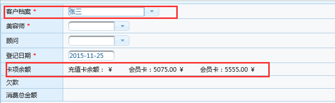
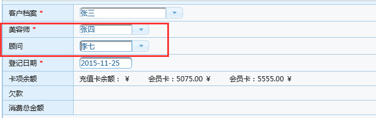
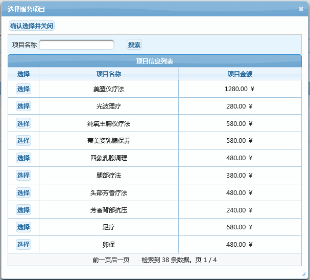
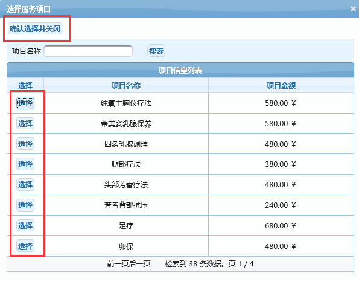
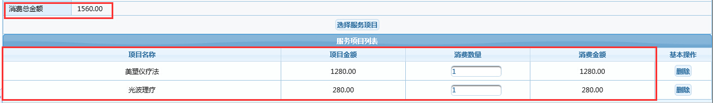
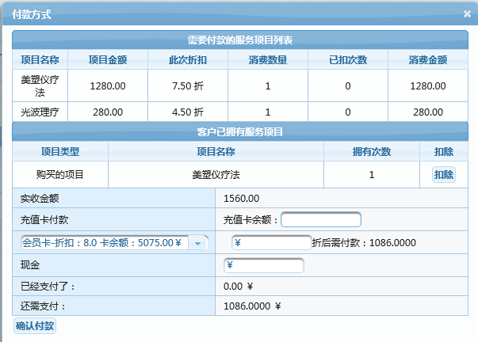
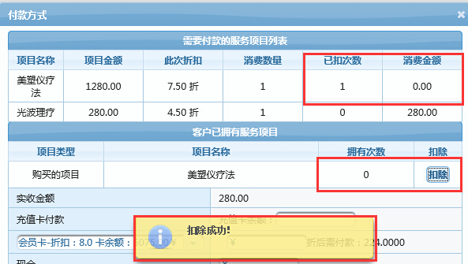
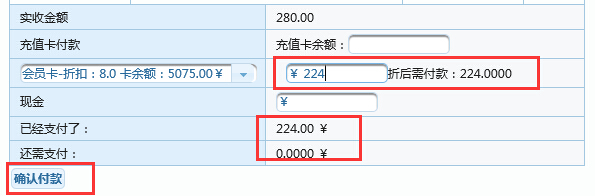
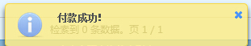

|
功能说明：用于根据客户进行服务消费。
服务消费操作步骤：
A：下拉选择或者输入客户卡号、客户姓名获取客户当前信息，如图

B：下拉或者输入美容师和顾问的姓名

C：单击“选择服务”按钮，就会弹出服务选择窗体，并可根据搜索条件搜索出对应的服务信息列表

D：单击左侧的“选择”按钮时，选中的这列会消失，选择完毕后单击“确认选择并关闭”按钮后就会关闭窗体，并将选中的产品显示在列表中，如图


E：查看信息无误后，单击“付款结算”按钮，弹出结算窗体，自动根据卡项计算服务折扣，并显示出客户是否拥有此项服务，如果有可进行次数消费

F：次数消费，单击客户已拥有项目中的右侧列表中的“扣除”按钮就可进行次数消费并会减少对应的付款额度，操作成功会进行提示

G：输入对应的款额，单击"确认付款"按钮

F：如果成功系统会提示“付款成功”字样，表示操作成功，然后可继续操作，操作时重复以上流程就可以了

|